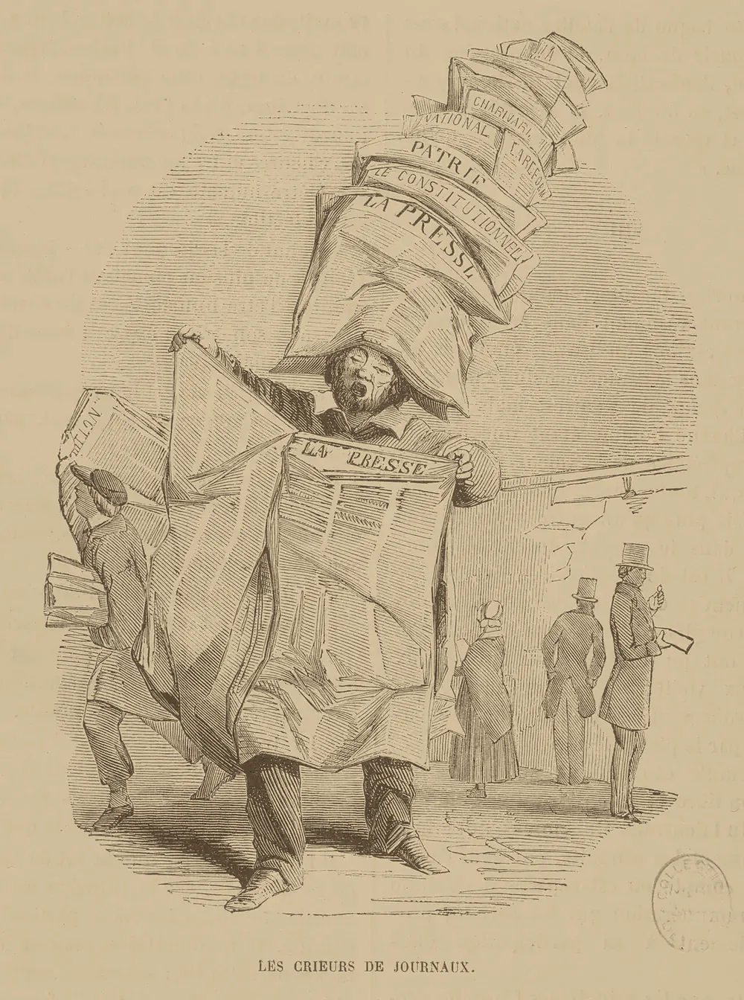

· Edición 7 · 6 min de lectura
Lo que pasó esta semana · 22 al 26 de septiembre
Revisada el · 1 corrección posteriores a la publicación

Grabado anónimo, 1849 · CC0, vía Wikimedia Commons
Seguimiento: Brasil fija la fecha para cerrar las apuestas en línea
En pocas palabras. Brasil ya puso fecha para apagar las apuestas en línea. Las empresas van a pelear en la corte. Y nadie sabe todavía cómo frenar los sitios de otros países.
Qué cambió. La medida provisional que Lula da Silva firmó el 25 de septiembre ya tiene calendario:
- Desde ya: no se aceptan depósitos nuevos.
- Hasta el 5 de octubre: los apostadores pueden sacar su plata.
- El 6 de octubre: los sitios deben salir del aire.
- Entre el 9 y el 14: los bancos devuelven lo que quede en las cuentas.
Qué sigue abierto. Las empresas preparan una demanda ante el Supremo Tribunal Federal, la corte más alta de Brasil. Dicen que no había urgencia para cambiar por decreto una ley del Congreso. Tienen un buen argumento: el Gobierno les dio 85 permisos y cobró 30 millones de reales por cada uno. El Congreso dejaría la discusión para después de la primera vuelta electoral. Y sigue sin respuesta cómo bloquear los sitios del exterior.
Seguimiento: la salud recibe un préstamo sin intereses; la fórmula sigue igual
En pocas palabras. El Estado les va a prestar plata sin intereses a las EPS para que paguen lo que deben. Eso alivia este año. Pero la regla que produce la deuda sigue igual.
Qué cambió. El plan de choque ya tiene su parte financiera: una compra de cartera. Quiere decir que el Estado se hace cargo de deudas de las EPS con hospitales y proveedores. Las EPS le devuelven esa plata después, sin intereses y con un año de gracia, es decir, un año sin empezar a pagar.
La Adres, la entidad que administra el dinero de la salud pública, le paga directamente a quien presta el servicio. La primera fase va hasta diciembre. Cubre a más de 700.000 personas que esperan medicamentos y a más de 300.000 que esperan procedimientos.
Qué sigue abierto. No hay cifras de cuántos pacientes ya recibieron lo que esperaban. Y el plan presta plata, pero no toca la regla que explicamos en la edición 6: la UPC, la suma fija que el sistema paga por cada afiliado, casi no distingue al sano del enfermo. El préstamo ayuda con la cuenta de este año. La del próximo ya viene en camino.
Seguimiento: Santa Marta después del paro armado
En pocas palabras. Un grupo armado ilegal cerró Santa Marta y luego la dejó abrir. La ciudad volvió a moverse. Pero quien decidió cuándo cerrar y cuándo abrir fue el grupo, no el Estado.
Qué cambió. Las Autodefensas Conquistadoras de la Sierra Nevada, el grupo que domina la zona, anunciaron el fin del paro el 25 de septiembre. Un paro armado es una orden de cerrar el comercio y parar el transporte, bajo amenaza. Desde la noche del 21, de cada 10 negocios, más de 9 cerraron. Tampoco hubo clases ni transporte. El Gobierno informó 13 capturas, y los 1.100 uniformados siguen en la ciudad.
Qué sigue abierto. El grupo se financia con extorsión: les cobra plata a los comerciantes bajo amenaza. Eso no depende de cuántas patrullas haya. Depende de que cada comerciante siga pensando que pagar es menos peligroso que denunciar. No hay datos de si las denuncias aumentaron. Además, según el estudio de 2025 citado en la edición 4, la extorsión sube en los seis meses después de que cae un jefe. Ese plazo empezó el 21 de septiembre.
Seguimiento: ébola, más zonas afectadas y una declaración sin cifras
En pocas palabras. El ébola sigue creciendo en la República Democrática del Congo. Los países del mundo aprobaron una declaración sobre pandemias. Pero la declaración no dice cuánta plata se va a poner.
Qué cambió. Al 23 de septiembre, el Congo sumaba 7.890 casos confirmados y 3.799 muertes, según la OMS, la Organización Mundial de la Salud. En la edición 4 eran 7.773 casos y 3.759 muertes. El virus llegó a dos zonas nuevas, en las fronteras con República Centroafricana y Sudán del Sur.
- Vacunas: CEPI, la coalición que financia vacunas contra epidemias, sumó 3,9 millones de dólares para las pruebas. Siguen en fase 1, la primera prueba en personas, que mide si la vacuna es segura, no si protege.
- La ONU: el 25, la Asamblea General aprobó una declaración política sobre pandemias.
Qué sigue abierto. Según análisis previos a la reunión, el texto no fija compromisos ni plazos para cubrir un faltante de unos 15.000 millones de dólares al año (Fuente única; no verificado.). Y el plan de ayuda contra el brote tenía menos de la mitad de la plata que necesita: 49%, según OCHA, la oficina de la ONU que coordina la ayuda humanitaria. Se repite lo que vimos en la edición 4: el dinero llega después de lo peor.
Seguimiento: sarampión en Estados Unidos
En pocas palabras. El sarampión sigue subiendo en Estados Unidos. Este año ya hay más casos que en todo el año pasado. Y ni siquiera las cuentas de muertes coinciden.
Al 24 de septiembre, los CDC, los Centros para el Control y la Prevención de Enfermedades de Estados Unidos, contaban 3.659 casos. Son 188 más que una semana antes, y 52% más que en todo 2025. Los CDC confirman una muerte; Pensilvania cuenta cuatro. Parte de la diferencia es de método: los CDC ahora toman las muertes de los certificados de defunción, no de los reportes de los estados.
Seguimiento: presupuesto 2027
En pocas palabras. El presupuesto de 2027 sigue en el Congreso, sin cambios de fondo.
Las plenarias tienen hasta el 20 de octubre para votarlo. El recorte de 170.000 millones de pesos a la JEP, la Jurisdicción Especial para la Paz, sigue en el texto. Por ahora, es la única cifra del presupuesto que nadie ha tocado.
Seguimiento: continúan los sismos en Chaparral
En pocas palabras. En Chaparral sigue temblando. Lo que protege es reforzar las casas, no esperar un aviso.
El Servicio Geológico Colombiano registra al menos 661 sismos desde el 20 de septiembre. De ellos, 19 fueron de magnitud 4,0 o más. Su primera explicación, todavía sin conclusión, es que la tierra se está reacomodando tras el terremoto del 10 de agosto en Chocó. Sigue vigente lo dicho en la edición 3: con sismos tan cercanos, lo que protege es el refuerzo de las viviendas, no el aviso.
Para quien quiera másLa paradoja del día
Brasil cobró 30 millones de reales por cada uno de sus 85 permisos de apuestas en línea. Menos de dos años después de abrir el mercado, les da hasta el 6 de octubre para apagar. El mejor argumento de las empresas ante la corte es el recibo.
Para conversar
La pregunta. Esta semana se repitió algo: una medida de urgencia que alivia, pero no cambia la regla.
- Un préstamo a las EPS, sin tocar la UPC.
- Uniformados en Santa Marta, sin tocar la plata de la extorsión.
- Una prohibición de apuestas que no alcanza a los sitios del exterior.
- Una declaración sobre pandemias sin cifras.
¿Cuándo una medida de choque es el puente hacia el cambio de fondo, y cuándo es la manera más cómoda de no hacerlo?
¿Le interesa ver las fuentes?
27 fuentes: 1 académica, 8 oficiales, 1 de una organización, 17 de prensa.
- Prensa O Povo. Entienda la medida provisional y el proyecto que prohíben las apuestas en Brasil
- Prensa iGaming Brazil. La medida provisional que prohíbe las apuestas se publica en el Diario Oficial
- Prensa Jornal Pequeno. Las casas de apuestas preparan acciones contra la prohibición y la disputa puede llegar al Supremo
- Oficial Ministerio de Hacienda de Brasil. Apuestas de cuota fija: legislación
- Prensa El Colombiano. Plan de choque en salud: ¿qué es la compra de cartera?
- Prensa Semana. Comenzó el plan de choque del Gobierno para más de un millón de pacientes
- Prensa Radio Hoy. Supersalud avanza con las regiones el plan de choque
- Oficial Presidencia de la República. El presidente De la Espriella ordena militarizar Santa Marta ante la amenaza de paro armado
- Prensa El País (Cali). Autodefensas de la Sierra Nevada anuncian finalización del paro armado en el Magdalena y La Guajira
- Prensa La Nación (Paraguay), con agencias. Santa Marta recupera la calma entre el despliegue militar y el temor
- Prensa Diario del Norte. Capturan a cinco presuntos integrantes de las ACSN por extorsión en Santa Marta
- Oficial Organización Mundial de la Salud. Enfermedad por el virus Bundibugyo, República Democrática del Congo (Disease Outbreak News)
- Oficial Noticias ONU. El brote de ébola en la República Democrática del Congo supera las 3.700 muertes
- Prensa Al Jazeera. El brote de ébola en la República Democrática del Congo llega a dos nuevas zonas de salud, según la OMS
- Organización CEPI. Nuevas investigaciones para fortalecer la vigilancia y los modelos en la respuesta al virus Bundibugyo
- Oficial OCHA (reproducido por GlobalSecurity). La respuesta al ébola en la República Democrática del Congo avanza, pero necesita apoyo urgente
- Oficial Organización Mundial de la Salud. Los líderes mundiales renuevan su compromiso de proteger al mundo de futuras pandemias
- Académica The Lancet Global Health. Del compromiso a la gobernanza: qué debería dejar la reunión de alto nivel de la ONU de 2026 sobre preparación para pandemias
- Prensa Health Policy Watch. El texto final de la declaración política de la ONU sobre pandemias
- Oficial CDC. Casos y brotes de sarampión
- Prensa Contagion Live. Actualización sobre sarampión: 25 de septiembre de 2026
- Prensa Becker's Hospital Review. Los CDC reportan una muerte por sarampión en 2026 y Pensilvania cuenta cuatro
- Prensa Infobae. Recorte de $170.000 millones a la JEP fue aprobado en primer debate del Presupuesto 2027
- Prensa Semana. Comisiones económicas del Congreso aprobaron en primer debate recorte a la JEP por $170.000 millones
- Oficial Servicio Geológico Colombiano. Sismicidad en Chaparral, Tolima, este 21 de septiembre de 2026
- Prensa El País (Cali). ¿Por qué van más de 660 temblores desde el 20 de septiembre? Esto explica el Servicio Geológico Colombiano
- Prensa Cambio. El SGC envía un equipo de expertos a Chaparral para estudiar la secuencia sísmica
Glosario
- Medida provisional: norma con fuerza de ley que dicta el presidente de Brasil; el Congreso debe aprobarla en un plazo para que siga vigente.
- Compra de cartera: el Estado, o una entidad pública, asume deudas pendientes de otros y les da un plazo para devolver el dinero.
- Año de gracia: periodo en el que el deudor no empieza a pagar.
- UPC (unidad de pago por capitación): lo que el sistema le paga a una EPS al año por cada afiliado.
- Paro armado: orden de un grupo ilegal de cerrar el comercio y suspender el transporte bajo amenaza.
- Declaración política de la ONU: texto que los países aprueban por consenso; fija metas, pero no obliga ni trae dinero por sí mismo.
- Ensayo de fase 1: primera prueba de una vacuna en personas; mide seguridad, no si protege.
Nota metodológica
Hicimos unas 20 búsquedas en español, inglés y portugués para revisar qué pasó desde su edición con cada tema de la semana (22 al 26 de septiembre). Por ser domingo no abrimos temas nuevos y no hay tabla de puntaje. No pudimos abrir los documentos completos (por ejemplo, las páginas de la OMS, los CDC y la declaración de la ONU), así que trabajamos con resultados de búsqueda y comparamos las cifras clave entre al menos dos de ellos cuando existían.
Quedó sin verificar o con límites:
- Casi todas las novedades de esta semana vienen de prensa: es lo normal en un seguimiento, pero las cifras oficiales (OMS, CDC, SGC) las vimos citadas, no en el documento original.
- El faltante de 15.000 millones de dólares al año y la falta de plazos en la declaración de la ONU vienen de análisis previos a su aprobación; no pudimos leer el texto final.
- El 49% de financiación del plan contra el ébola es de mediados de septiembre.
- Las 13 capturas en Santa Marta y la cifra de 661 sismos son datos oficiales citados por la prensa.
El grabado es anónimo (1849) y muestra a un vendedor de periódicos en París; es de otra época y lo usamos para evocar el tema.
Correcciones
Datos corregidos después de publicar; cada corrección lleva su fecha.
Corrección ·
Reescribimos la edición en un lenguaje más sencillo, con frases cortas y ejemplos cotidianos. Los datos y las fuentes son los mismos.